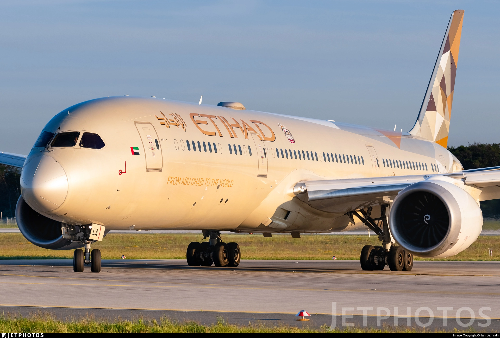
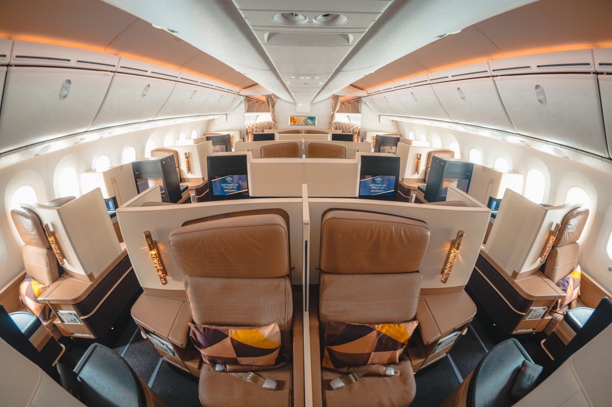

Business Class
Business class is een reisklasse die beschikbaar is bij veel commerciële luchtvaartmaatschappijen en spoorlijnen, bekend onder merknamen die verschillen per luchtvaartmaatschappij of spoorwegmaatschappij. In de luchtvaartindustrie was het oorspronkelijk bedoeld als een gemiddeld serviceniveau tussen economy class en first class, maar veel luchtvaartmaatschappijen bieden nu business class aan als het hoogste serviceniveau, omdat ze eersteklas stoelen hebben geëlimineerd. Businessclass onderscheidt zich van andere reisklassen door de kwaliteit van zitplaatsen, eten, drinken, grondservice en andere voorzieningen. In de commerciële luchtvaart wordt volledige businessclass meestal aangeduid met 'J' of 'C' met flexibele planning, maar dit kan afhankelijk van de omstandigheden veel andere letters zijn.

Luchtvaartmaatschappijen begonnen eind jaren zeventig met het scheiden van passagiers met een vol tarief en met korting in economy class. In 1976 introduceerde KLM een Full Fare Facilities (FFF) -service voor haar full-fare economy class-passagiers, waardoor ze voorin de economy-cabine direct achter first class konden zitten, en dit concept werd snel gekopieerd door verschillende andere luchtvaartmaatschappijen, waaronder Air Canada. Zowel United Airlines als Trans World Airlines experimenteerden in 1978 met een soortgelijk concept van drie klassen, maar verlieten het vanwege negatieve reacties van reizigers uit de economy class die het gevoel hadden dat voorzieningen werden weggenomen. United haalde ook aan dat het moeilijk is om bij te houden welke passagiers op aansluitende vluchten in welk gedeelte van de economy-cabine moeten zitten. American Airlines begon in 1978 ook met het scheiden van economy-passagiers met vol tarief van economy-passagiers met korting, en bood open middenstoelen aan voor passagiers met vol tarief. Rond deze tijd was er speculatie in de luchtvaartindustrie dat supersonische vliegtuigen de markt zouden veroveren voor de best betalende premium passagiers, en dat er een markt van drie klassen zou ontstaan, bestaande uit supersonische eersteklas en subsonische zaken- en economy class. In 1977 kondigde El Al plannen aan om zijn vliegtuig te herconfigureren met een kleine eersteklas cabine en een grotere businessclass cabine, in de veronderstelling dat de meeste transatlantische eersteklas passagiers hun bedrijf zouden verplaatsen naar de Concorde.
